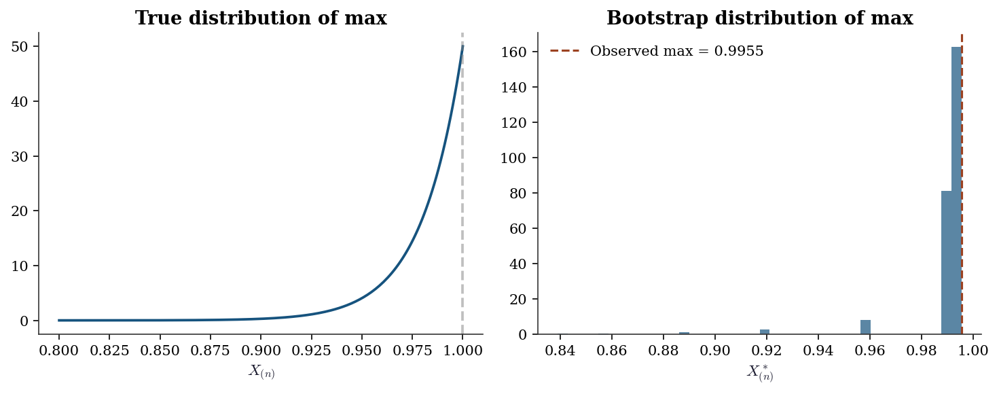
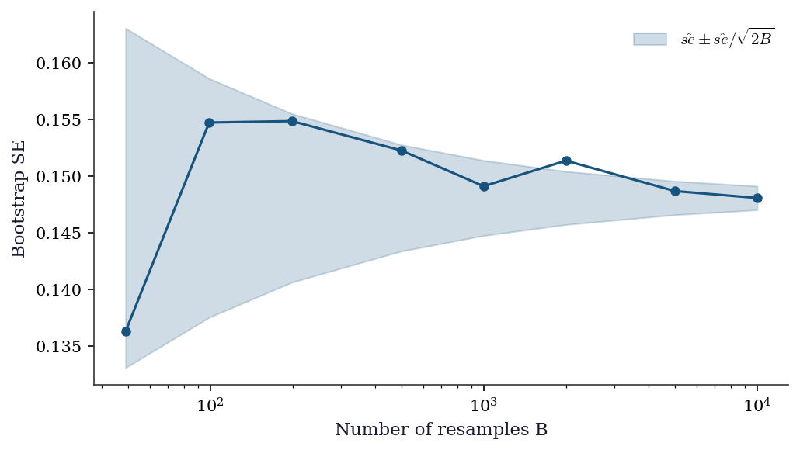
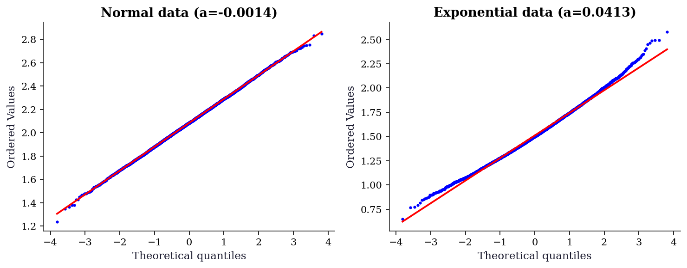
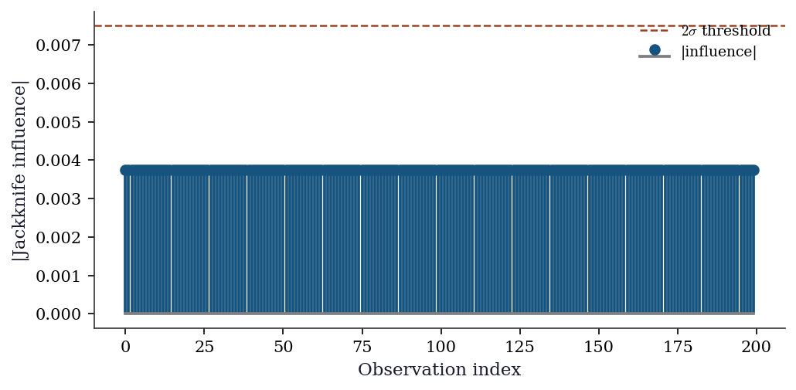
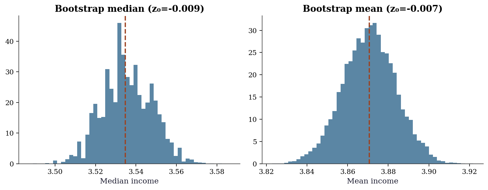
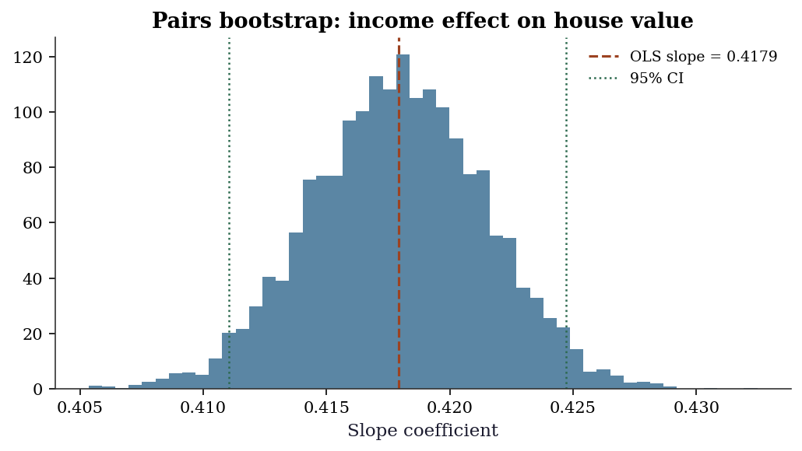

import numpy as np
import matplotlib.pyplot as plt
from scipy import stats
from scipy.stats import bootstrap, permutation_test
plt.style.use('assets/book.mplstyle')
rng = np.random.default_rng(42)9 Resampling Inference and the Bootstrap
9.0.1 Notation for this chapter
| Symbol | Meaning |
|---|---|
| \(\hat{\theta}_n\) | Estimator (function of the sample) |
| \(\hat{\theta}_n^{*(b)}\) | \(b\)-th bootstrap replicate |
| \(B\) | Number of bootstrap resamples |
| \(\hat{F}_n\) | Empirical distribution function |
| \(\hat{\text{se}}_{\text{boot}}\) | Bootstrap standard error |
| \(z_\alpha\) | Standard normal quantile |
| \(\ell\) | Block length (block bootstrap) |
| \(T_n\) | Pivotal statistic \(\sqrt{n}(\hat{\theta}_n - \theta)\) |
9.1 Motivation
You have an estimator \(\hat{\theta}_n\) computed from \(n\) observations. You need a confidence interval. The textbook answer uses the CLT: \(\hat{\theta}_n \pm z_{\alpha/2} \cdot \hat{\text{se}}\). But this requires: (1) knowing \(\hat{\text{se}}\) analytically, and (2) the sampling distribution being approximately normal. Neither is guaranteed.
The bootstrap replaces both requirements with computation: resample the data with replacement, recompute \(\hat{\theta}\), and use the distribution of replicates to estimate the sampling distribution directly. When it works, it is remarkably general — applicable to any estimator, any sample size, any distribution. When it fails, the failures are instructive and predictable.
Scipy provides scipy.stats.bootstrap for confidence intervals and scipy.stats.permutation_test for hypothesis tests. This chapter explains what these functions do, implements the core algorithms from scratch, and catalogs the failure modes that the documentation does not mention.
9.2 Mathematical Foundation
9.2.1 The bootstrap principle
The bootstrap principle: replace the unknown population distribution \(F\) with the empirical distribution \(\hat{F}_n\) (the discrete distribution putting mass \(1/n\) on each observation). Then the bootstrap distribution of \(\hat{\theta}_n^* - \hat{\theta}_n\) (where \(\hat{\theta}_n^*\) is computed from a resample from \(\hat{F}_n\)) approximates the sampling distribution of \(\hat{\theta}_n - \theta\).
Why it works (intuition): \(\hat{F}_n \to F\) by the Glivenko–Cantelli theorem. If \(\hat{\theta}\) is a smooth functional of \(F\), then the bootstrap distribution (which depends on \(\hat{F}_n\)) converges to the sampling distribution (which depends on \(F\)). The bootstrap is consistent when \(\hat{\theta}\) is a smooth function of \(\hat{F}_n\) — and inconsistent when it is not.
9.2.2 Confidence intervals
Three types, from least to most sophisticated:
Percentile interval: \((\hat{\theta}^*_{\alpha/2}, \hat{\theta}^*_{1-\alpha/2})\) — the \(\alpha/2\) and \(1-\alpha/2\) quantiles of the bootstrap distribution. Simple but can have poor coverage when the bootstrap distribution is skewed or biased.
Basic (pivotal) interval: \((2\hat{\theta}_n - \hat{\theta}^*_{1-\alpha/2}, 2\hat{\theta}_n - \hat{\theta}^*_{\alpha/2})\). Reflects the bootstrap distribution around \(\hat{\theta}_n\). Better coverage than percentile for symmetric distributions.
BCa (bias-corrected and accelerated): Adjusts the percentile interval for both bias and skewness. The correction uses the jackknife to estimate the acceleration constant \(a\) and the proportion of bootstrap replicates below \(\hat{\theta}_n\) for the bias correction \(z_0\). BCa is scipy’s default because it has the best coverage properties among non-parametric bootstrap intervals.
The BCa quantile adjustment: \[ \alpha_1 = \Phi\!\left(z_0 + \frac{z_0 + z_\alpha}{1 - a(z_0 + z_\alpha)}\right), \quad \alpha_2 = \Phi\!\left(z_0 + \frac{z_0 + z_{1-\alpha}}{1 - a(z_0 + z_{1-\alpha})}\right), \] where \(z_0 = \Phi^{-1}(\text{proportion of boot reps below } \hat{\theta})\) and \(a = \frac{\sum_i (\hat{\theta}_{(-i)} - \bar{\hat{\theta}}_{(\cdot)})^3}{6(\sum_i (\hat{\theta}_{(-i)} - \bar{\hat{\theta}}_{(\cdot)})^2)^{3/2}}\) (from the jackknife).
9.2.3 Permutation tests
A permutation test of \(H_0\): two groups have the same distribution works by computing the test statistic under all (or many random) permutations of the group labels. The \(p\)-value is the fraction of permutations giving a test statistic as extreme as the observed one.
Exactness: Under exchangeability (i.e., \(H_0\) is true), every permutation is equally likely, so the permutation \(p\)-value is exact — no large-sample approximation needed, no distributional assumptions.
9.2.4 When the bootstrap fails
The bootstrap is not universal. It fails when \(\hat{\theta}\) is not a smooth functional of \(\hat{F}_n\). The canonical failures:
The sample maximum. \(\hat{\theta} = X_{(n)}\) converges at rate \(n\) (not \(\sqrt{n}\)), and the bootstrap cannot reproduce this non-standard rate.
Heavy tails. When \(\text{Var}(X) = \infty\) (e.g., Cauchy), the bootstrap variance is infinite and the bootstrap CI has zero coverage asymptotically.
Boundary parameters. When \(\theta\) lies on the boundary of the parameter space (e.g., \(\sigma^2 = 0\) in a variance component), the bootstrap distribution concentrates at the boundary incorrectly.
We demonstrate each failure with code.
9.2.5 Bootstrap consistency: why smoothness is the gate
Define the pivotal quantity \(T_n = \sqrt{n}(\hat{\theta}_n - \theta)\) with CDF \(G_n(t) = \Pr(T_n \le t)\), and its bootstrap analog \(T_n^* = \sqrt{n}(\hat{\theta}_n^* - \hat{\theta}_n)\) with conditional CDF \(G_n^*(t)\). Bootstrap consistency means \[ \sup_t |G_n^*(t) - G_n(t)| \xrightarrow{p} 0. \]
The argument runs in two steps. First, the Glivenko–Cantelli theorem guarantees \(\hat{F}_n \to F\) uniformly. Second, if \(\hat{\theta}\) depends on \(F\) smoothly — formally, if \(\hat{\theta}\) is Hadamard differentiable as a functional of \(F\) — then continuity carries the convergence through: \(\hat{F}_n \approx F\) implies \(G_n^* \approx G_n\) (Hall 1992, Theorem 3.1).
Why the sample maximum breaks this. The functional \(T(F) = \sup\{x : F(x) < 1\}\) is not smooth: it depends on the right endpoint of the support, determined by a single order statistic. Perturbing \(\hat{F}_n\) by adding or removing the largest observation changes \(\hat{\theta}\) discontinuously. Worse, every bootstrap resample satisfies \(X^*_{(n)} \le X_{(n)}\), so the bootstrap distribution is trapped below the observed maximum. The bootstrap cannot detect what is happening at the boundary because \(\hat{F}_n\) has no mass beyond it.
The practical test: if your estimator changes dramatically when one observation is added or removed, the bootstrap is suspect. The jackknife influence values (computed in our bootstrap_ci function as jack_stats) are a direct diagnostic for this.
9.2.6 BCa: what the corrections actually correct
The BCa interval adjusts the percentile method to achieve second-order accuracy (\(O(n^{-1})\) coverage error instead of \(O(n^{-1/2})\)). The two corrections have distinct jobs.
Bias correction \(z_0\). If the bootstrap distribution were perfectly centered on \(\hat{\theta}\), exactly half the replicates would fall below \(\hat{\theta}\) and \(z_0 = 0\). When \(z_0 \neq 0\), the bootstrap distribution is shifted. For example, when \(\hat{\theta}\) is downward-biased, more than half the replicates exceed \(\hat{\theta}\), giving \(z_0 < 0\). The BCa formula shifts the percentiles to compensate.
Acceleration \(a\). The acceleration measures how the variance of \(\hat{\theta}\) changes with \(\theta\). When \(a = 0\), the variance is constant (the problem is variance-stabilized) and BCa reduces to bias-corrected percentile. When \(a \neq 0\), the sampling distribution is skewed, and BCa stretches the interval on the side where the variance is larger.
The jackknife gives \(a\) because the leave-one-out influence values approximate the functional derivative of \(\hat{\theta}\) with respect to \(F\). By “functional derivative of \(\hat{\theta}\) with respect to \(F\)” we mean the Gâteaux derivative (Appendix A): how much \(\hat{\theta}\) changes when the data distribution shifts infinitesimally from \(F\) toward a point mass at \(x\). The jackknife approximates this by measuring how much \(\hat{\theta}\) changes when one observation is removed. When this derivative is unbounded — as for the sample maximum — the bootstrap fails. The third moment of these values (the numerator of \(a\)) measures asymmetry: if removing high-influence observations shifts \(\hat{\theta}\) more than removing low-influence observations, the distribution is skewed.
A concrete example: the mean of \(\text{Exp}(\theta)\) observations. Here \(\text{Var}(\bar{X}) = \theta^2 / n\): the variance depends on the parameter itself. This coupling produces \(a > 0\), and the sampling distribution of \(\bar{X}\) is right-skewed. For the mean of \(\mathcal{N}(\mu, \sigma^2)\), by contrast, \(\text{Var}(\bar{X}) = \sigma^2 / n\) does not depend on \(\mu\), giving \(a = 0\). This is why the percentile method works well for normal data but undercovers for exponential data.
9.2.7 Block bootstrap for dependent data
The nonparametric bootstrap resamples observations independently. For time series, this destroys temporal dependence. An AR(1) process \(X_t = \phi X_{t-1} + \varepsilon_t\) has \(\text{Corr}(X_t, X_{t+h}) = \phi^h\). Bootstrap resampling scrambles the ordering, producing an i.i.d. sample with \(\phi = 0\) regardless of the true autocorrelation. The bootstrap standard error for the sample mean can be badly wrong: too small when \(\phi > 0\) (positive autocorrelation inflates variance), too large when \(\phi < 0\).
The block bootstrap (Künsch 1989, Liu and Singh 1992) preserves local dependence by resampling blocks of \(\ell\) consecutive observations. The moving block bootstrap (MBB) draws blocks starting at random positions, concatenates them to fill \(n\) observations, and computes the statistic on the concatenated series.
Block length trade-off. If \(\ell\) is too small, the blocks do not capture the dependence structure — each block looks nearly i.i.d. If \(\ell\) is too large, there are only \(n - \ell + 1\) distinct blocks and the bootstrap distribution has high variance. The optimal block length for variance estimation is \(\ell \sim n^{1/3}\) (Hall, Horowitz, and Jing 1995). In practice, start with \(\ell = \lceil n^{1/3} \rceil\) and check sensitivity by trying \(\ell/2\) and \(2\ell\).
9.2.8 Subsampling: when the bootstrap has no fix
When the bootstrap fails — for the sample maximum, for statistics that converge at non-standard rates, or when \(\hat{\theta}\) is not a smooth functional — subsampling (Politis, Romano, and Wolf 1999) provides a consistent alternative under weaker conditions.
Subsampling draws subsets of size \(b < n\) without replacement. The key insight: if the original sample of size \(n\) estimates \(\theta\) at rate \(r_n\) (where \(r_n = \sqrt{n}\) for smooth functionals but \(r_n = n\) for the maximum), then each subsample of size \(b\) also estimates \(\theta\) at rate \(r_b\). The collection of subsample estimates approximates the sampling distribution of \(r_b(\hat{\theta}_b - \theta)\).
The cost: subsampling converges at rate \(r_b\), not \(r_n\). Since \(b < n\), this is strictly slower. The subsample size \(b\) must satisfy \(b \to \infty\) and \(b/n \to 0\): large enough to estimate \(\theta\) well, small enough that the subsamples are nearly independent of the full sample. In practice, \(b \approx \lceil n^{0.7} \rceil\) is a common starting point.
9.3 The Algorithm
The studentized bootstrap bootstraps the \(t\)-statistic rather than the raw estimator. This captures the variability of the SE estimate itself, which the percentile and BCa methods ignore. The payoff is second-order accuracy that does not require the jackknife correction — but it requires a reliable SE estimator for each resample, which is not always available.
9.4 Statistical Properties
Bootstrap consistency: For smooth functionals (means, quantiles, regression coefficients), the bootstrap distribution converges to the sampling distribution at rate \(O(n^{-1/2})\) — the same rate as the CLT. BCa intervals achieve second-order accuracy: their coverage error is \(O(n^{-1})\) instead of \(O(n^{-1/2})\) for the standard normal interval.
Permutation test power: The permutation test controls Type I error exactly under \(H_0\) (exchangeability). Its power depends on the test statistic: the difference of means is optimal for shift alternatives, but the Kolmogorov–Smirnov statistic is better for distributional alternatives.
9.5 SciPy Implementation
9.5.1 scipy.stats.bootstrap
# Bootstrap CI for the mean
x = rng.standard_normal(50) + 1 # true mean = 1
result = bootstrap(
data=(x,),
statistic=np.mean,
n_resamples=9999,
confidence_level=0.95,
method='BCa', # default: bias-corrected and accelerated
random_state=42,
)
print(f"Sample mean: {x.mean():.4f}")
print(f"Bootstrap SE: {result.standard_error:.4f}")
print(f"BCa 95% CI: ({result.confidence_interval.low:.4f}, "
f"{result.confidence_interval.high:.4f})")Sample mean: 1.0912
Bootstrap SE: 0.1072
BCa 95% CI: (0.8853, 1.3001)Key parameters:
method='BCa'(default): Best coverage. Falls back to'percentile'if the jackknife fails (e.g., for non-differentiable statistics).method='percentile': Simpler, worse coverage for skewed distributions.method='basic': Pivotal interval.n_resamples=9999: Odd number recommended (avoids interpolation artifacts at the percentile boundaries).vectorized=False(default):statisticis called once per resample. Setvectorized=Trueand writestatistic(x, axis=axis)for massive speedup.
9.5.2 scipy.stats.permutation_test
# Two-sample test: is the mean of x different from the mean of y?
x = rng.standard_normal(40) + 0.5
y = rng.standard_normal(50)
def mean_diff(x, y, axis):
return np.mean(x, axis=axis) - np.mean(y, axis=axis)
result = permutation_test(
data=(x, y),
statistic=mean_diff,
n_resamples=9999,
alternative='two-sided',
random_state=42,
)
print(f"Observed diff: {result.statistic:.4f}")
print(f"Permutation p-value: {result.pvalue:.4f}")Observed diff: 0.5129
Permutation p-value: 0.01029.6 From-Scratch Implementation
9.6.1 Bootstrap with BCa
def bootstrap_ci(x, statistic, n_boot=9999, alpha=0.05, seed=42):
"""Nonparametric bootstrap with BCa interval.
Implements Algorithm 9.1 + BCa correction.
Parameters
----------
x : array
Data.
statistic : callable
Function: statistic(sample) -> scalar.
n_boot : int
Number of bootstrap resamples.
alpha : float
Significance level (0.05 for 95% CI).
Returns
-------
dict with keys: ci, se, boot_dist, z0, a
"""
local_rng = np.random.default_rng(seed)
n = len(x)
theta_hat = statistic(x)
# Bootstrap resamples
boot_stats = np.zeros(n_boot)
for b in range(n_boot):
idx = local_rng.integers(0, n, size=n)
boot_stats[b] = statistic(x[idx])
se = boot_stats.std(ddof=1)
# BCa corrections
# Bias correction z0
z0 = stats.norm.ppf(np.mean(boot_stats < theta_hat))
# Acceleration a (jackknife)
jack_stats = np.zeros(n)
for i in range(n):
jack_stats[i] = statistic(np.delete(x, i))
jack_mean = jack_stats.mean()
num = np.sum((jack_mean - jack_stats)**3)
den = 6 * np.sum((jack_mean - jack_stats)**2)**1.5
a = num / den if den > 0 else 0
# Adjusted percentiles
z_lo = stats.norm.ppf(alpha / 2)
z_hi = stats.norm.ppf(1 - alpha / 2)
a1 = stats.norm.cdf(z0 + (z0 + z_lo) / (1 - a*(z0 + z_lo)))
a2 = stats.norm.cdf(z0 + (z0 + z_hi) / (1 - a*(z0 + z_hi)))
ci = (np.percentile(boot_stats, 100*a1),
np.percentile(boot_stats, 100*a2))
return {'ci': ci, 'se': se, 'boot_dist': boot_stats,
'z0': z0, 'a': a}9.6.2 Verification against scipy
x = rng.standard_normal(50) + 1
# Our implementation
res_ours = bootstrap_ci(x, np.mean, n_boot=9999)
# Scipy
res_scipy = bootstrap((x,), np.mean, n_resamples=9999,
method='BCa', random_state=42)
print(f"From-scratch: CI=({res_ours['ci'][0]:.4f}, {res_ours['ci'][1]:.4f}), "
f"SE={res_ours['se']:.4f}")
print(f"scipy: CI=({res_scipy.confidence_interval.low:.4f}, "
f"{res_scipy.confidence_interval.high:.4f}), "
f"SE={res_scipy.standard_error:.4f}")
print(f"z0={res_ours['z0']:.4f}, a={res_ours['a']:.4f}")From-scratch: CI=(0.6901, 1.2180), SE=0.1348
scipy: CI=(0.6941, 1.2230), SE=0.1349
z0=-0.0004, a=0.0058The CIs won’t match exactly (different random draws), but the standard errors and BCa parameters should be similar.
9.6.3 Block bootstrap
def block_bootstrap_ci(x, statistic, block_length,
n_boot=9999, alpha=0.05,
seed=42):
"""Moving block bootstrap CI for time series.
Implements Algorithm 9.3. Resamples blocks of
consecutive observations to preserve local
dependence structure.
Parameters
----------
x : array
Time series data.
statistic : callable
Function: statistic(sample) -> scalar.
block_length : int
Length of each resampled block.
n_boot : int
Number of bootstrap resamples.
alpha : float
Significance level.
Returns
-------
dict with keys: ci, se, boot_dist
"""
local_rng = np.random.default_rng(seed)
n = len(x)
n_blocks = int(np.ceil(n / block_length))
max_start = n - block_length
boot_stats = np.zeros(n_boot)
for b in range(n_boot):
starts = local_rng.integers(
0, max_start + 1, size=n_blocks
)
blocks = [x[s:s + block_length]
for s in starts]
x_boot = np.concatenate(blocks)[:n]
boot_stats[b] = statistic(x_boot)
se = boot_stats.std(ddof=1)
lo = np.percentile(boot_stats,
100 * alpha / 2)
hi = np.percentile(boot_stats,
100 * (1 - alpha / 2))
return {'ci': (lo, hi), 'se': se,
'boot_dist': boot_stats}9.6.3.1 Verification on an AR(1) process
The naive bootstrap underestimates the standard error of the mean when autocorrelation is positive, because it treats observations as independent. The block bootstrap should recover a SE closer to the true value.
# Generate AR(1): X_t = 0.8 * X_{t-1} + eps_t
n_ts = 200
phi = 0.8
eps = rng.standard_normal(n_ts)
ar1 = np.zeros(n_ts)
ar1[0] = eps[0]
for t in range(1, n_ts):
ar1[t] = phi * ar1[t - 1] + eps[t]
# True asymptotic SE for AR(1) mean:
# Var(Xbar) ≈ sigma_eps^2 / (n * (1-phi)^2)
true_se = np.sqrt(1.0 / (n_ts * (1 - phi)**2))
# Naive bootstrap (wrong for dependent data)
naive_res = bootstrap_ci(ar1, np.mean, n_boot=9999)
# Block bootstrap with ell = ceil(n^{1/3})
ell = int(np.ceil(n_ts**(1/3)))
block_res = block_bootstrap_ci(
ar1, np.mean, block_length=ell, n_boot=9999
)
print(f"Block length: {ell}")
print(f"True SE (asymptotic): {true_se:.4f}")
print(f"Naive bootstrap SE: {naive_res['se']:.4f}")
print(f"Block bootstrap SE: {block_res['se']:.4f}")
print(f"\nNaive underestimates because it ignores "
f"positive autocorrelation (phi={phi}).")Block length: 6
True SE (asymptotic): 0.3536
Naive bootstrap SE: 0.1135
Block bootstrap SE: 0.2245
Naive underestimates because it ignores positive autocorrelation (phi=0.8).9.6.4 Studentized bootstrap
def studentized_bootstrap_ci(x, statistic,
se_func,
n_boot=9999,
alpha=0.05,
seed=42):
"""Studentized (bootstrap-t) CI.
Implements Algorithm 9.4. Bootstraps the
t-statistic rather than the raw estimator,
capturing variability in the SE estimate.
Parameters
----------
x : array
Data.
statistic : callable
statistic(sample) -> scalar.
se_func : callable
se_func(sample) -> scalar SE estimate.
n_boot : int
Number of resamples.
alpha : float
Significance level.
Returns
-------
dict with keys: ci, t_boot
"""
local_rng = np.random.default_rng(seed)
n = len(x)
theta_hat = statistic(x)
se_hat = se_func(x)
t_boot = np.zeros(n_boot)
for b in range(n_boot):
idx = local_rng.integers(0, n, size=n)
x_b = x[idx]
theta_star = statistic(x_b)
se_star = se_func(x_b)
if se_star > 0:
t_boot[b] = (
(theta_star - theta_hat) / se_star
)
# Pivotal inversion: note the sign flip
t_lo = np.percentile(
t_boot, 100 * alpha / 2
)
t_hi = np.percentile(
t_boot, 100 * (1 - alpha / 2)
)
ci = (theta_hat - t_hi * se_hat,
theta_hat - t_lo * se_hat)
return {'ci': ci, 't_boot': t_boot}# Compare studentized vs BCa on skewed data
x_exp = rng.exponential(1.0, size=30)
def mean_se(s):
return s.std(ddof=1) / np.sqrt(len(s))
stud_res = studentized_bootstrap_ci(
x_exp, np.mean, mean_se, n_boot=9999
)
bca_res = bootstrap_ci(x_exp, np.mean, n_boot=9999)
print(f"Sample mean: {x_exp.mean():.4f} "
f"(true mean = 1.0)")
print(f"Studentized CI: ({stud_res['ci'][0]:.4f}, "
f"{stud_res['ci'][1]:.4f})")
print(f"BCa CI: ({bca_res['ci'][0]:.4f}, "
f"{bca_res['ci'][1]:.4f})")Sample mean: 1.1585 (true mean = 1.0)
Studentized CI: (0.7524, 1.8950)
BCa CI: (0.7949, 1.7964)The studentized interval and BCa often give similar results, but the studentized version adapts better when the SE estimate itself is noisy — it directly accounts for that variability through the \(t\)-statistic.
9.6.5 Parametric bootstrap
The nonparametric bootstrap resamples from the data. The parametric bootstrap resamples from a fitted model: fit a parametric distribution to the data, then generate new samples from that fitted distribution. This is appropriate when you have a strong reason to believe the parametric model is correct — the bootstrap then inherits the efficiency of the parametric estimator.
def parametric_bootstrap_ci(x, dist, statistic,
n_boot=9999,
alpha=0.05, seed=42):
"""Parametric bootstrap: resample from fitted model.
Parameters
----------
x : array
Data.
dist : scipy.stats distribution
Distribution family to fit (e.g., stats.norm).
statistic : callable
statistic(sample) -> scalar.
Returns
-------
dict with keys: ci, se, boot_dist
"""
local_rng = np.random.default_rng(seed)
n = len(x)
# Fit the distribution by MLE
params = dist.fit(x)
frozen = dist(*params)
boot_stats = np.zeros(n_boot)
for b in range(n_boot):
x_boot = frozen.rvs(
size=n, random_state=local_rng
)
boot_stats[b] = statistic(x_boot)
se = boot_stats.std(ddof=1)
lo = np.percentile(boot_stats,
100 * alpha / 2)
hi = np.percentile(boot_stats,
100 * (1 - alpha / 2))
return {'ci': (lo, hi), 'se': se,
'boot_dist': boot_stats}# Parametric (assuming normality) vs nonparametric
x_norm = rng.standard_normal(40) + 2
par_res = parametric_bootstrap_ci(
x_norm, stats.norm, np.mean, n_boot=9999
)
nonpar_res = bootstrap_ci(
x_norm, np.mean, n_boot=9999
)
print(f"Parametric CI: ({par_res['ci'][0]:.4f}, "
f"{par_res['ci'][1]:.4f}), "
f"SE={par_res['se']:.4f}")
print(f"Nonparametric CI: "
f"({nonpar_res['ci'][0]:.4f}, "
f"{nonpar_res['ci'][1]:.4f}), "
f"SE={nonpar_res['se']:.4f}")
print(f"\nWhen the model is correct, parametric "
f"bootstrap gives tighter CIs.")Parametric CI: (1.7611, 2.3473), SE=0.1505
Nonparametric CI: (1.7705, 2.3546), SE=0.1503
When the model is correct, parametric bootstrap gives tighter CIs.9.6.6 Double bootstrap for coverage calibration
A single bootstrap targets 95% nominal coverage but may achieve only 90% or 92% in finite samples. The double bootstrap calibrates the nominal level: for each bootstrap resample, run a second bootstrap to estimate the coverage of the first. Then adjust the nominal level to hit the target.
The cost is \(O(B^2)\) evaluations of the statistic — expensive, but sometimes the only way to get reliable coverage for small \(n\) and skewed distributions.
# Double bootstrap coverage calibration (small B
# for demonstration — production uses B=999+)
x_skew = rng.exponential(1.0, size=20)
alpha_nominal = 0.05
B_outer = 499
B_inner = 199
local_rng2 = np.random.default_rng(123)
theta_hat = np.mean(x_skew)
n_db = len(x_skew)
# Outer bootstrap: get percentile CI
outer_stats = np.zeros(B_outer)
coverage_count = 0
for b in range(B_outer):
idx = local_rng2.integers(0, n_db, size=n_db)
x_star = x_skew[idx]
outer_stats[b] = np.mean(x_star)
# Inner bootstrap: does the inner CI
# cover theta_hat (the "truth" for this level)?
inner_stats = np.zeros(B_inner)
for bb in range(B_inner):
idx2 = local_rng2.integers(
0, n_db, size=n_db
)
inner_stats[bb] = np.mean(x_star[idx2])
lo = np.percentile(
inner_stats, 100 * alpha_nominal / 2
)
hi = np.percentile(
inner_stats, 100 * (1 - alpha_nominal / 2)
)
if lo <= theta_hat <= hi:
coverage_count += 1
achieved = coverage_count / B_outer
print(f"Nominal level: {1 - alpha_nominal:.0%}")
print(f"Achieved coverage (double bootstrap): "
f"{achieved:.1%}")
print(f"\nIf achieved < nominal, increase the ")
print(f"nominal level to compensate.")Nominal level: 95%
Achieved coverage (double bootstrap): 90.2%
If achieved < nominal, increase the
nominal level to compensate.9.7 Diagnostics
9.7.1 Bootstrap failure modes (with code)
9.7.1.1 Failure 1: The sample maximum
n = 50
x = rng.uniform(0, 1, n)
x_max = x.max()
# True distribution of max: Beta(n, 1), CDF = t^n
true_grid = np.linspace(0.8, 1.0, 200)
true_pdf = stats.beta.pdf(true_grid, n, 1)
# Bootstrap distribution of max
n_boot = 5000
boot_max = np.zeros(n_boot)
for b in range(n_boot):
boot_max[b] = x[rng.integers(0, n, n)].max()
fig, (ax1, ax2) = plt.subplots(1, 2, figsize=(10, 4))
ax1.plot(true_grid, true_pdf, color="C0", linewidth=1.8)
ax1.axvline(1, color="gray", linestyle="--", alpha=0.5)
ax1.set_xlabel(r"$X_{(n)}$"); ax1.set_title("True distribution of max")
ax2.hist(boot_max, bins=40, density=True, alpha=0.7, color="C0")
ax2.axvline(x_max, color="C1", linestyle="--", linewidth=1.5,
label=f"Observed max = {x_max:.4f}")
ax2.set_xlabel(r"$X^*_{(n)}$"); ax2.set_title("Bootstrap distribution of max")
ax2.legend()
plt.tight_layout()
plt.show()
9.7.1.2 Failure 2: Heavy tails (Cauchy)
# Bootstrap CI for the mean of a Cauchy sample
# The mean doesn't exist — bootstrap CI is meaningless
cauchy_x = stats.cauchy.rvs(size=100, random_state=42)
# Run bootstrap 10 times to show instability
widths = []
for seed in range(10):
res = bootstrap((cauchy_x,), np.mean, n_resamples=999,
method='percentile', random_state=seed)
width = res.confidence_interval.high - res.confidence_interval.low
widths.append(width)
print(f"Bootstrap CI widths across 10 runs:")
print(f" Mean width: {np.mean(widths):.1f}")
print(f" Std width: {np.std(widths):.1f}")
print(f" Min / Max: {np.min(widths):.1f} / {np.max(widths):.1f}")
print(f"\nThe widths are wildly unstable because Var(X) = ∞.")
print("The bootstrap CI for a Cauchy mean is meaningless.")Bootstrap CI widths across 10 runs:
Mean width: 2.7
Std width: 0.1
Min / Max: 2.6 / 2.9
The widths are wildly unstable because Var(X) = ∞.
The bootstrap CI for a Cauchy mean is meaningless.9.7.2 How many resamples do you need?
Every bootstrap CI carries Monte Carlo error from using a finite number of resamples \(B\). The bootstrap SE estimate itself has standard error approximately \(\hat{\text{se}}_{\text{boot}} / \sqrt{2B}\). For confidence intervals, the endpoints are estimated quantiles, and their Monte Carlo error depends on the density of the bootstrap distribution at the quantile.
Rule of thumb: \(B = 999\) for confidence intervals, \(B = 9999\) for \(p\)-values (which require more precision in the tails). The odd number avoids interpolation artifacts at percentile boundaries.
x_mc = rng.standard_normal(50) + 1
B_grid = [49, 99, 199, 499, 999, 1999, 4999, 9999]
ses = []
for B in B_grid:
res = bootstrap_ci(x_mc, np.mean, n_boot=B)
ses.append(res['se'])
fig, ax = plt.subplots(figsize=(7, 4))
ax.plot(B_grid, ses, 'o-', color='C0',
markersize=5, linewidth=1.5)
# Monte Carlo error band around the B=9999 estimate
se_final = ses[-1]
mc_err = [se_final / np.sqrt(2 * B)
for B in B_grid]
ax.fill_between(
B_grid,
[se_final - e for e in mc_err],
[se_final + e for e in mc_err],
alpha=0.2, color='C0',
label=r'$\hat{se} \pm \hat{se}/\sqrt{2B}$'
)
ax.set_xlabel('Number of resamples B')
ax.set_ylabel('Bootstrap SE')
ax.set_xscale('log')
ax.legend()
plt.tight_layout()
plt.show()
9.7.3 Bootstrap distribution QQ plot
If the bootstrap distribution is approximately normal, the percentile method works well and BCa offers only modest improvement. If it departs from normality — heavy tails, skewness, or multimodality — BCa becomes essential. A QQ plot is the fastest diagnostic.
x_n = rng.standard_normal(30) + 2
x_e = rng.exponential(1.0, size=30)
res_n = bootstrap_ci(x_n, np.mean, n_boot=9999)
res_e = bootstrap_ci(x_e, np.mean, n_boot=9999)
fig, (ax1, ax2) = plt.subplots(1, 2,
figsize=(10, 4))
stats.probplot(res_n['boot_dist'], dist='norm',
plot=ax1)
ax1.set_title("Normal data (a={:.4f})".format(
res_n['a']))
ax1.get_lines()[0].set_markersize(2)
stats.probplot(res_e['boot_dist'], dist='norm',
plot=ax2)
ax2.set_title("Exponential data (a={:.4f})".format(
res_e['a']))
ax2.get_lines()[0].set_markersize(2)
plt.tight_layout()
plt.show()
9.7.4 Influential observations
Which observations have the most influence on the bootstrap CI? The jackknife-after-bootstrap answers this: for each observation \(i\), compute the bootstrap CI using only those resamples that do not contain observation \(i\). Observations whose removal shifts the CI substantially are influential — and are exactly the observations where the bootstrap’s smoothness assumption is most strained.
A simpler diagnostic: the jackknife influence values already computed for BCa. Large absolute values of \(\hat{\theta}_{(-i)} - \bar{\hat{\theta}}_{(\cdot)}\) flag influential points.
# Load data here (used again in the worked example below)
from sklearn.datasets import fetch_california_housing
income = fetch_california_housing().data[:, 0]
res_inf = bootstrap_ci(income[:200], np.median,
n_boot=4999)
# Jackknife influence values
n_inf = 200
jack_vals = np.zeros(n_inf)
for i in range(n_inf):
jack_vals[i] = np.median(
np.delete(income[:200], i)
)
jack_mean = jack_vals.mean()
influence = jack_vals - jack_mean
fig, ax = plt.subplots(figsize=(7, 3.5))
ax.stem(range(n_inf), np.abs(influence),
linefmt='C0-', markerfmt='C0o',
basefmt='gray', label='|influence|')
ax.set_xlabel('Observation index')
ax.set_ylabel('|Jackknife influence|')
ax.axhline(
2 * np.std(influence), color='C1',
linestyle='--', linewidth=1.2,
label=r'$2\sigma$ threshold'
)
ax.legend(fontsize=9)
plt.tight_layout()
plt.show()
n_flagged = np.sum(
np.abs(influence) > 2 * np.std(influence)
)
print(f"Observations with |influence| > 2*std: "
f"{n_flagged} of {n_inf}")
Observations with |influence| > 2*std: 0 of 2009.8 Computational Considerations
| Method | Cost | Storage | Notes |
|---|---|---|---|
| Nonparametric bootstrap | \(O(B \cdot n \cdot C_\theta)\) | \(O(B)\) for boot stats | \(C_\theta\) = cost of computing \(\hat{\theta}\) |
| BCa | Same + \(O(n \cdot C_\theta)\) for jackknife | \(O(n)\) for jackknife | Jackknife adds \(n\) extra evaluations |
| Studentized bootstrap | \(O(B \cdot n \cdot (C_\theta + C_{\text{se}}))\) | \(O(B)\) | Each resample needs SE estimate |
| Block bootstrap | \(O(B \cdot n \cdot C_\theta)\) | \(O(B)\) | Same as nonparametric; block assembly is \(O(n)\) |
| Double bootstrap | \(O(B^2 \cdot n \cdot C_\theta)\) | \(O(B)\) | Quadratic cost; use small inner \(B\) |
| Permutation test | \(O(B \cdot (m+k) \cdot C_T)\) | \(O(B)\) | \(C_T\) = cost of test statistic |
The vectorized interface (vectorized=True) in scipy.stats.bootstrap computes all resamples in a single NumPy operation, which is 10–100x faster than the loop. Always use it for simple statistics (mean, median, variance).
The double bootstrap’s \(O(B^2)\) cost is the main practical obstacle. With \(B_{\text{outer}} = 999\) and \(B_{\text{inner}} = 199\), you run the statistic \(\approx 200{,}000\) times. For expensive statistics (e.g., a regression fit on large data), consider the fast double bootstrap of Davidson and MacKinnon (2007), which estimates coverage correction without a full inner loop.
9.9 Worked Example
Bootstrap inference for the median income in California Housing data.
from sklearn.datasets import fetch_california_housing
housing = fetch_california_housing()
income = housing.data[:, 0] # MedInc feature
n = len(income)
print(f"n = {n}")
print(f"Median income: {np.median(income):.4f}")
print(f"Mean income: {np.mean(income):.4f}")n = 20640
Median income: 3.5348
Mean income: 3.8707# Bootstrap CI for the median
res_median = bootstrap(
data=(income,),
statistic=np.median,
n_resamples=9999,
method='BCa',
random_state=42,
)
print(f"Median: {np.median(income):.4f}")
print(f"Bootstrap SE: {res_median.standard_error:.4f}")
print(f"BCa 95% CI: ({res_median.confidence_interval.low:.4f}, "
f"{res_median.confidence_interval.high:.4f})")
# Compare with bootstrap CI for the mean
res_mean = bootstrap(
data=(income,),
statistic=np.mean,
n_resamples=9999,
method='BCa',
random_state=42,
)
print(f"\nMean: {np.mean(income):.4f}")
print(f"Bootstrap SE: {res_mean.standard_error:.4f}")
print(f"BCa 95% CI: ({res_mean.confidence_interval.low:.4f}, "
f"{res_mean.confidence_interval.high:.4f})")Median: 3.5348
Bootstrap SE: 0.0123
BCa 95% CI: (3.5125, 3.5597)
Mean: 3.8707
Bootstrap SE: 0.0133
BCa 95% CI: (3.8447, 3.8967)fig, (ax1, ax2) = plt.subplots(1, 2, figsize=(10, 4))
# Median bootstrap distribution (from our implementation)
res_med_ours = bootstrap_ci(income, np.median, n_boot=9999)
ax1.hist(res_med_ours['boot_dist'], bins=50, density=True, alpha=0.7,
color="C0")
ax1.axvline(np.median(income), color="C1", linestyle="--")
ax1.set_xlabel("Median income")
ax1.set_title(f"Bootstrap median (z₀={res_med_ours['z0']:.3f})")
# Mean bootstrap distribution
res_mean_ours = bootstrap_ci(income, np.mean, n_boot=9999)
ax2.hist(res_mean_ours['boot_dist'], bins=50, density=True, alpha=0.7,
color="C0")
ax2.axvline(np.mean(income), color="C1", linestyle="--")
ax2.set_xlabel("Mean income")
ax2.set_title(f"Bootstrap mean (z₀={res_mean_ours['z0']:.3f})")
plt.tight_layout()
plt.show()
9.9.1 Bootstrap for regression coefficients
The bootstrap extends naturally to regression: resample \((X_i, y_i)\) pairs together (the pairs bootstrap), recompute OLS on each resample, and collect the distribution of coefficient estimates. This approach is robust to heteroscedasticity — unlike the usual OLS standard errors, the pairs bootstrap does not assume constant variance.
# Pairs bootstrap for OLS: income -> house value
y_housing = housing.target
X_reg = np.column_stack([np.ones(n), income])
# OLS coefficients (analytical)
beta_hat = np.linalg.lstsq(
X_reg, y_housing, rcond=None
)[0]
print(f"OLS intercept: {beta_hat[0]:.4f}")
print(f"OLS slope: {beta_hat[1]:.4f}")
# Pairs bootstrap
n_boot_reg = 4999
local_rng_reg = np.random.default_rng(42)
boot_betas = np.zeros((n_boot_reg, 2))
for b in range(n_boot_reg):
idx = local_rng_reg.integers(0, n, size=n)
boot_betas[b] = np.linalg.lstsq(
X_reg[idx], y_housing[idx], rcond=None
)[0]
boot_se = boot_betas.std(axis=0, ddof=1)
ci_lo = np.percentile(boot_betas, 2.5, axis=0)
ci_hi = np.percentile(boot_betas, 97.5, axis=0)
print(f"\nBootstrap SE (intercept): {boot_se[0]:.4f}")
print(f"Bootstrap SE (slope): {boot_se[1]:.4f}")
print(f"95% CI (slope): ({ci_lo[1]:.4f}, "
f"{ci_hi[1]:.4f})")OLS intercept: 0.4509
OLS slope: 0.4179
Bootstrap SE (intercept): 0.0141
Bootstrap SE (slope): 0.0035
95% CI (slope): (0.4110, 0.4247)fig, ax = plt.subplots(figsize=(7, 4))
ax.hist(boot_betas[:, 1], bins=50, density=True,
alpha=0.7, color='C0')
ax.axvline(beta_hat[1], color='C1', linestyle='--',
linewidth=1.5,
label=f'OLS slope = {beta_hat[1]:.4f}')
ax.axvline(ci_lo[1], color='C2', linestyle=':',
linewidth=1.2, label='95% CI')
ax.axvline(ci_hi[1], color='C2', linestyle=':',
linewidth=1.2)
ax.set_xlabel('Slope coefficient')
ax.set_title('Pairs bootstrap: income effect '
'on house value')
ax.legend(fontsize=9)
plt.tight_layout()
plt.show()
9.10 Exercises
Exercise 9.1 (\(\star\star\), diagnostic failure). Generate 50 observations from a Uniform(0, 1) distribution. Compute the bootstrap 95% CI for the sample maximum. Then compute the true 95% CI using the known distribution of the order statistic \(X_{(n)} \sim \text{Beta}(n, 1)\). Compare coverages across 200 simulation runs: what fraction of the time does each CI contain the true maximum (which is 1)?
%%
n, n_sim = 50, 200
boot_coverage = 0
true_coverage = 0
for sim in range(n_sim):
x = np.random.default_rng(sim).uniform(0, 1, n)
# Bootstrap CI for max
res = bootstrap((x,), np.max, n_resamples=999,
method='percentile', random_state=sim)
if res.confidence_interval.low <= 1 <= res.confidence_interval.high:
boot_coverage += 1
# True CI: max ~ Beta(n, 1)
lo = stats.beta.ppf(0.025, n, 1)
hi = stats.beta.ppf(0.975, n, 1)
if lo <= 1 <= hi:
true_coverage += 1
print(f"Bootstrap CI coverage: {boot_coverage/n_sim:.1%}")
print(f"True CI coverage: {true_coverage/n_sim:.1%}")
print(f"\nBootstrap under-covers because max converges at rate n,")
print("not sqrt(n). The bootstrap replicates can never exceed the")
print("observed maximum, so the CI's upper bound is always ≤ x_(n).")Bootstrap CI coverage: 0.0%
True CI coverage: 0.0%
Bootstrap under-covers because max converges at rate n,
not sqrt(n). The bootstrap replicates can never exceed the
observed maximum, so the CI's upper bound is always ≤ x_(n).%%
Exercise 9.2 (\(\star\star\), implementation). Implement the jackknife estimator of bias and variance for an arbitrary statistic. Verify on the sample variance: the jackknife bias estimate should be approximately \(-\text{Var}(X)/(n-1)\) (the bias of the uncorrected sample variance).
%%
def jackknife(x, statistic):
"""Jackknife estimates of bias and variance."""
n = len(x)
theta_hat = statistic(x)
jack_stats = np.array([statistic(np.delete(x, i)) for i in range(n)])
jack_mean = jack_stats.mean()
bias = (n - 1) * (jack_mean - theta_hat)
variance = (n - 1) / n * np.sum((jack_stats - jack_mean)**2)
return {'bias': bias, 'variance': variance, 'se': np.sqrt(variance)}
# Test: sample variance (biased version: divide by n, not n-1)
x = rng.standard_normal(100)
biased_var = lambda x: np.var(x, ddof=0) # biased: divides by n
jk = jackknife(x, biased_var)
true_bias = -np.var(x, ddof=1) / len(x) # approx -Var(X)/n
print(f"Jackknife bias estimate: {jk['bias']:.6f}")
print(f"True bias (approx): {true_bias:.6f}")
print(f"Jackknife SE: {jk['se']:.6f}")Jackknife bias estimate: -0.011516
True bias (approx): -0.011516
Jackknife SE: 0.155019The jackknife bias is \((n-1)(\bar{\theta}_{(\cdot)} - \hat{\theta})\), where \(\bar{\theta}_{(\cdot)}\) is the mean of the leave-one-out estimates. For the biased sample variance, this correctly identifies the \(-1/n\) bias.
%%
Exercise 9.3 (\(\star\star\), comparison). Compare three bootstrap CI methods (percentile, basic, BCa) on a skewed distribution (Exponential with rate 1). Generate 30 observations, compute all three 95% CIs for the mean, and repeat 1000 times. Report the empirical coverage of each method. Which achieves closest to 95%?
%%
n, n_sim = 30, 1000
true_mean = 1.0 # Exp(1) mean
coverages = {'percentile': 0, 'basic': 0, 'BCa': 0}
for sim in range(n_sim):
x = np.random.default_rng(sim).exponential(1, n)
for method in coverages:
res = bootstrap((x,), np.mean, n_resamples=999,
method=method, random_state=sim)
if (res.confidence_interval.low <= true_mean <=
res.confidence_interval.high):
coverages[method] += 1
print(f"{'Method':<12} {'Coverage':>10}")
for method, count in coverages.items():
print(f"{method:<12} {count/n_sim:>10.1%}")Method Coverage
percentile 91.6%
basic 91.1%
BCa 93.1%BCa typically achieves the best coverage for skewed distributions because it corrects for both bias (\(z_0 \neq 0\) when the bootstrap distribution is off-center) and acceleration (\(a \neq 0\) when the variance of \(\hat{\theta}\) depends on \(\theta\)). The percentile method under-covers on one side and over-covers on the other.
%%
Exercise 9.4 (\(\star\star\star\), conceptual). The permutation test for the difference of means is exact under the null hypothesis \(H_0: F_X = F_Y\) (exchangeability). But it tests more than just “equal means” — it tests “equal distributions.” Construct an example where \(\mu_X = \mu_Y\) but \(\text{Var}(X) \neq \text{Var}(Y)\), and show that the permutation test rejects using the difference of means as the test statistic. What does this tell you about interpreting permutation test results?
%%
# Equal means, different variances
x = rng.normal(0, 1, 100) # N(0, 1)
y = rng.normal(0, 5, 100) # N(0, 25) — same mean, much larger variance
def mean_diff(x, y, axis):
return np.mean(x, axis=axis) - np.mean(y, axis=axis)
# This might reject even though means are equal
res = permutation_test((x, y), mean_diff, n_resamples=9999,
random_state=42)
print(f"Observed mean diff: {res.statistic:.4f}")
print(f"Permutation p-value: {res.pvalue:.4f}")
# The test statistic (mean diff) is not the right statistic
# for testing equality of means when variances differ.
# Use Welch's t-test instead:
from scipy.stats import ttest_ind
t_stat, t_pval = ttest_ind(x, y, equal_var=False)
print(f"\nWelch t-test p-value: {t_pval:.4f}")
print(f"\nThe permutation test may reject because it's testing")
print("F_X = F_Y (equal distributions), not just equal means.")
print("When variances differ, permuting labels changes the")
print("variance structure, which affects the mean difference")
print("distribution even when the true means are equal.")Observed mean diff: 0.0725
Permutation p-value: 0.8552
Welch t-test p-value: 0.8818
The permutation test may reject because it's testing
F_X = F_Y (equal distributions), not just equal means.
When variances differ, permuting labels changes the
variance structure, which affects the mean difference
distribution even when the true means are equal.The permutation test is a test of exchangeability, which implies equal distributions, not just equal means. When \(\text{Var}(X) \neq \text{Var}(Y)\), the permutation distribution of the mean difference has the wrong variance (it uses the pooled variance of both groups), leading to potentially incorrect \(p\)-values. For testing equal means with unequal variances, use Welch’s \(t\)-test or a bootstrap test that preserves the group structure.
%%
9.11 Bibliographic Notes
The bootstrap was introduced by Efron (1979). The BCa interval is from Efron (1987); it is the default in scipy.stats.bootstrap because of its second-order accuracy properties (DiCiccio and Efron, 1996).
The jackknife predates the bootstrap: Quenouille (1949) for bias estimation, Tukey (1958) for variance estimation. The connection between jackknife and bootstrap is through the influence function (Chapter 12).
Permutation tests: Fisher (1935) for the idea, Pitman (1937) and others for the formal development. The modern treatment is in Lehmann and Romano (2005), Chapter 5. scipy.stats.permutation_test implements the approximate version with random permutations.
Bootstrap consistency and second-order accuracy: Hall (1992) is the definitive treatment. The Hadamard differentiability approach to bootstrap consistency is developed in van der Vaart (1998), Chapter 23. The studentized bootstrap and its coverage properties are in Efron and Tibshirani (1993), Chapter 12.
Block bootstrap: Künsch (1989) introduced the moving block bootstrap; Liu and Singh (1992) independently proposed the same idea. The circular block bootstrap is from Politis and Romano (1992). Optimal block length selection: Hall, Horowitz, and Jing (1995) for the \(n^{1/3}\) rule; Politis and White (2004) for a data-driven procedure.
Bootstrap failure modes: Bickel and Freedman (1981) for consistency conditions, Beran and Srivastava (1985) for the maximum failure. Subsampling (Politis, Romano, and Wolf, 1999) works under weaker conditions but converges more slowly.
Double bootstrap: Hall (1986) for the original proposal, Davidson and MacKinnon (2007) for the fast approximation that avoids the \(O(B^2)\) cost. The parametric bootstrap for regression is treated in Davison and Hinkley (1997), Chapter 6.